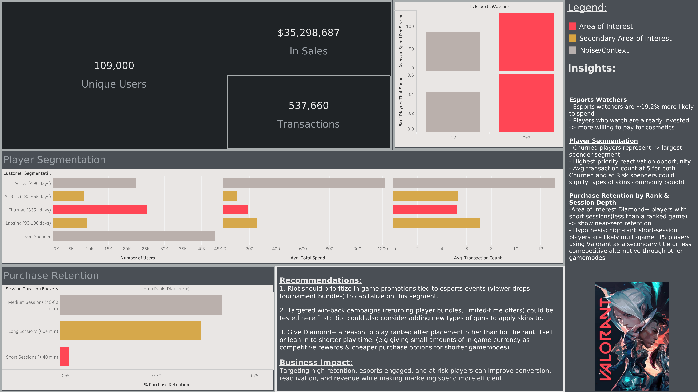

Player Pulse
Valorant Customer Spend Analysis — Personal Project

Overview
Player Pulse is a lifecycle segmentation and spend prediction framework built on synthetic Valorant-style player data. The project simulates 100,000 players across five seasons (2021–2025), generating over 500,000 transactions and more than $35 million in synthetic revenue. The pipeline moves from data generation through SQL exploration, correlation analysis, RFM segmentation, Random Forest modeling, and Tableau visualization — treating the dataset as a business simulation for how a live-service game analytics team might approach monetization and retention strategy.
Data
Two synthetic datasets were generated to reflect realistic live-service game dynamics:
- Transaction data — 500,000+ rows covering purchases from 2021–2025. Players were assigned to four spend tiers at generation: Non-Spender (40%), Casual (35%), Mid-Tier (20%), and Whale (5%). Seasonal weighting concentrates 35% of revenue in September–December to mirror real game release cycles.
- Player behavior data — one row per active user-season, tracking rank, session depth, esports viewership, agent diversity, cross-platform hours, and 30-day retention across nine rank tiers (Iron through Radiant).
Exploratory Analysis
Correlation Heatmap
A correlation heatmap across all behavioral and transaction variables surfaced five signals worth investigating. The clearest positives: transaction variables correlated with retention and account age, agent diversity correlated with seasons active, and esports viewership correlated with session frequency and account longevity. The clearest negatives: transaction recency negatively correlated with all spend metrics — players who hadn't purchased recently had spent significantly less overall — and cohort year negatively correlated with seasons active and account age, which is expected by construction (newer players have had less time to accumulate tenure) and not a real business insight.
The most actionable signal on the board was the 0.74 correlation between average rank score and average session minutes. Higher-ranked players play significantly longer sessions, and both variables showed moderate spend correlation individually. Testing them together as an interaction became one of the SQL questions.
SQL Business Questions
Each SQL query was written to answer a specific question surfaced by the heatmap:
| Question | Finding |
|---|---|
| Does early spending predict future retention? | Players who spent in a prior season were 11.4 percentage points more likely to be retained in subsequent seasons |
| Do esports watchers spend more despite similar session times? | Esports watchers are about twice as active and 19.2% more likely to spend. Controlling for longevity (spend per season), the gap narrows — much of the spend difference is explained by watchers simply sticking around longer |
| Does agent diversity predict long-term engagement? | One-trick players (1–2 agents) burn out faster and spend significantly less. Most players use 3+ agents; the one-trick segment is small but a viable re-engagement target — similar to how League of Legends uses champion bans to force players out of comfort zones |
| Who are the at-risk high-value players? | Active players spend far more on average than churned players. Churned players average ~5 lifetime transactions — roughly matching the number of primary weapon slots in Valorant's strategic meta — suggesting cosmetic fatigue may be a driver. Adding meta-relevant weapon skins or new animation styles could reactivate this segment |
| Does rank + session depth together predict spend better than either alone? | High-rank, long-session players are the biggest spenders. The one exception: high-rank, short-session players show a slight retention dip — likely competitive imports from Overwatch or CS:GO who play Valorant occasionally rather than as their main game |
RFM Segmentation
Using the transaction data, each player was scored on Recency (days since last purchase), Frequency (transaction count), and Monetary (total spend) — each on a 1–5 quintile scale. Composite scores mapped players into eight named segments: Champion, Loyal Player, High Spender, New Player, At Risk, Lapsing, Churned, and Casual/Non-Spender. The merged behavioral + RFM dataset was exported for downstream modeling and Tableau visualization.
Random Forest Modeling
After segmentation, two Random Forest models tested whether behavioral signals could predict monetization outcomes. Spend-derived features (transaction count, recency days, average spend per transaction, max single transaction) were excluded from both models to prevent leakage — the models learn from behavior, not from spending history.
Model 1 — Spend Propensity Classifier
Question: Will a player spend at all? | ROC-AUC: 0.7316
The model distinguishes spenders from non-spenders with moderate accuracy. class_weight='balanced' corrects for the roughly 40% spender rate in the dataset. Top features by importance:
- avg_retention — players who stay engaged convert at higher rates
- account_age_days — longer tenure means more exposure to cosmetics, battle passes, and event offers
- seasons_active — engagement across multiple seasons tracks with conversion
- cohort_year, avg_session_mins
is_esports_watcher ranked low despite SQL showing esports watchers have a 19.2% higher spender rate. The Random Forest result suggests esports watching predicts spending indirectly — through retention, account age, and seasons active — not independently. Watchers spend more because they're more engaged overall, not because watching esports directly triggers purchases.
Model 2 — Spend Amount Regressor
Question: For players who do spend, how much? | R²: 0.1079 | MAE: $695 | RMSE: $1,361
The low R² means behavioral features explain only a small fraction of spend variance among spenders. This fits how free-to-play monetization actually works — spend amount depends on cosmetic preferences, bundle timing, income, and emotional attachment to specific skins, none of which appear in behavioral logs. Top features:
- account_age_days — longer-tenured players spend more in absolute terms
- avg_retention
- avg_esports_watch_hrs — a shift from Model 1, where binary watcher status ranked low. Watch hours predict spend depth among players who already pay; deeper ecosystem involvement correlates with higher player value
- avg_session_mins, avg_rank_score, avg_sessions_per_week
Interpretation
Classification outperformed regression. Identifying likely spenders is tractable; predicting exact dollar amounts is not. The Random Forest validates and extends the SQL findings — adding weighting to determine which features matter most when all are considered simultaneously. Long-term engagement (retention, account age, seasons active) is the dominant monetization signal across both models. Esports engagement functions as an ecosystem signal, not a purchase trigger: SQL showed watchers convert more, but the model showed other engagement variables explain most of that conversion. Among spenders, watch hours predict spend depth.
Business Recommendations
- High-retention non-spenders — retention is the strongest conversion predictor. High-retention players who haven't purchased yet are the most actionable acquisition segment. Target with first-purchase campaigns: beginner bundles, personalized store offers, limited-time discounts.
- Esports-engaged spenders — players with high watch hours who already spend show greater revenue potential. VCT-themed cosmetics, team bundles, and event-based exclusives are the right product vehicles for this group.
- Long-tenure, high-engagement players — old accounts with strong retention, multiple active seasons, and long sessions represent the highest-value tier. Loyalty programs, premium cosmetics, and proactive reactivation campaigns if purchase frequency starts declining.
Limitations
- The dataset is synthetic. These results are a portfolio-level business simulation, not a model of real Riot player behavior.
- Key spend drivers are missing from the behavioral logs: cosmetic preferences, income, store rotation history, battle pass ownership, discount exposure, and favorite agents/weapons. The regression's low R² reflects those gaps directly.
- Retention, account age, and seasons active are correlated with each other. Random Forest distributes importance across related features, so the exact feature ranking matters less than the cluster it represents: long-term engagement is the signal.
Conclusion
Behavioral data predicts conversion better than spend amount. Retention, account age, and seasons active are the strongest signals across both models. Esports watch hours matter more for spend depth than for initial conversion. The central finding: monetization is a function of engagement. Players who stay active longer, play across more seasons, and participate more in the Valorant ecosystem become the most valuable customers. For a live-service title, retention strategy and monetization strategy are the same thing.